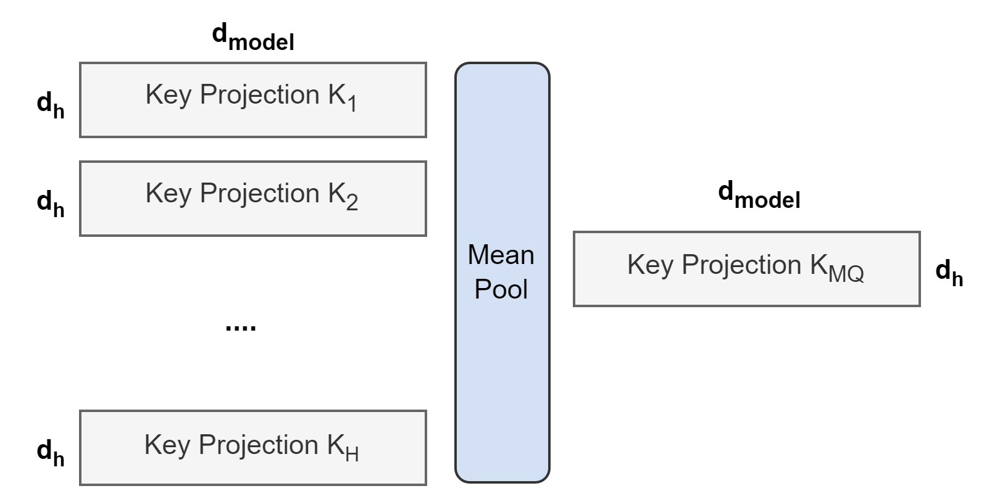
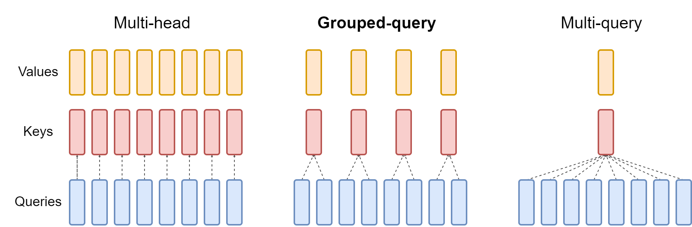

发展脉络
现代架构围绕三个瓶颈演进：注意力的长度复杂度、稀疏专家的计算/通信、以及多模态和状态空间的统一表示。
标准多头注意力（MHA）的 $O(n^2)$ 复杂度和 KV Cache 显存膨胀，是长上下文和高吞吐推理的两大瓶颈。从 MQA 到 GQA 再到 MLA，再到 NSA 和滑动窗口注意力（SWA）——这些变体都在回答同一个问题：能不能少存点 K/V、少算点分数矩阵，同时尽量不损失精度？这一节做一次全景对比，并给出 2026 年的工程选型经验。
所有注意力变体都在做同一件事的权衡：压缩 KV 的存储和计算量，代价是注意力精度的损失。MHA 每个头有独立的 KV（最精确，最贵）；MQA 所有头共享一组 KV（最省，最糙）；GQA 折中——分组共享；MLA 用低秩压缩把 KV 压成一个小向量，推理时再解压——省显存但不丢精度。SWA 和 NSA 则从"少算一些位置"的角度切入。
标准多头注意力（MHA）中，每个注意力头有自己独立的 Q、K、V 矩阵。推理时为了不重复计算历史 token 的 K 和 V，这些 K/V 被缓存在显存里——这就是 KV Cache。在解码阶段，每生成一个新 token，都要和缓存里全部历史 K/V 做注意力，因此 KV Cache 的大小直接决定了"能撑多长的上下文"以及"能并行多少条请求"。
问题在于 KV Cache 的显存占用随序列长度线性增长，且随注意力头数成正比。其字节数可以拆成下面几个因子：
注意这里用的是 $n_{kv\_heads}$ 而不是 $n_{heads}$：在 MHA 里二者相等，但在 MQA/GQA/MLA 里 KV 头数被压低了——这正是所有变体"省显存"的杠杆点。以 LLaMA-2 7B 为例：32 层、32 头、$d_{head}=128$、FP16（2 字节）。单条请求 KV Cache 每增加一个 token 就多占 $32 \times 32 \times 128 \times 2 \times 2 = 524{,}288$ 字节 ≈ 0.5 MB。当上下文拉到 32K，单条请求的 KV Cache 就要约 16 GB——和模型权重（约 14 GB FP16）一个量级。当 batch size 上去、并发请求多了，KV Cache 成了显存的第一大消耗者，而模型权重只是"一次性"的固定开销。
下面这张图把几种方案在"单 token KV Cache 相对大小"上放在一起比较（以 MHA 为 100%，数值为示意，基于约 32 层、128 维头、FP16 的典型设定）。可以看到：MQA 和 MLA 都能把 KV Cache 压到约 1/32，但达成方式完全不同——MQA 靠牺牲头的多样性，MLA 靠低秩压缩且几乎不损精度。
在深入每个变体之前，先用一张思维导图把家族关系理清楚。一个有用的视角是：这些方案要么在"攻显存墙"（少存 KV），要么在"攻计算墙"（少算分数），而 FlashAttention 这种 IO 重排方案严格说不属于"变体"，因为它不改算法、只改访存顺序。
Multi-Query Attention（MQA） 是最极端的简化：所有注意力头共享同一组 K 和 V，只有 Q 保持多头。也就是说，从 $h$ 组 KV 变成 1 组 KV，KV Cache 直接缩减到原来的 $1/h$。
MQA 的 KV Cache 缩减效果惊人——以 32 头为例，KV Cache 显存直接降到 1/32。推理时所有头读同一份 K/V，显存带宽压力也小，吞吐大幅提升。但代价是精度下降明显：所有头看到的 K/V 完全相同，失去了多头的多样性，模型质量有可感知的下降，尤其在需要细粒度区分的任务（如检索、长程推理）上更明显。
工程上 MQA 还带来一个隐忧：因为 K/V 只有一份，它成了所有头的"单一信息瓶颈"，训练时梯度对这组共享 K/V 的更新非常集中，有时会导致训练不稳定。MQA 在 PaLM、Falcon 等模型中被采用，但后续大多被 GQA 取代——因为 GQA 几乎能达到同样的省显存收益，却把精度损失压到很小。
Grouped-Query Attention（GQA） 是 MHA 和 MQA 的插值：把 $h$ 个头分成 $g$ 组，每组内的头共享同一组 K/V。当 $g = h$ 时就是 MHA，当 $g = 1$ 时就是 MQA。GQA 让你在精度和效率之间选一个甜点。
| 方案 | KV 头数 | KV Cache 相对 MHA | 精度 | 代表模型 |
|---|---|---|---|---|
| MHA | $h$（全头独立） | 1×（基准） | 最高 | 原版 Transformer、GPT-2/3 |
| GQA | $g$（分组共享） | $g/h$ | 接近 MHA | LLaMA-2（部分）、LLaMA-3、Mistral、Qwen-2 |
| MQA | 1（全共享） | $1/h$ | 有损 | PaLM、Falcon |
实践经验表明，GQA 在 $g = 8$（即 8 组 KV）时就能在大多数任务上逼近 MHA 的精度，同时把 KV Cache 压到原来的 $8/h$。LLaMA-2 70B 使用了 GQA（$g=8$），LLaMA-3 全系列都采用 GQA。GQA 已成为 2024 年后新模型的事实标准——在不显著损精度的前提下大幅降低推理显存。
GQA 这个想法本身很简单，但它的原始论文真正难的是「怎么把一个已经训练好的 MHA 模型变成 GQA 模型」，而不必从头重训。下面两张图来自提出 GQA 的那篇论文《GQA: Training Generalized Multi-Query Transformer Models from Multi-Head Checkpoints》，第一张讲 MHA 怎么转成更激进的 MQA，第二张讲 GQA 的分组方法本身。

新手读这张图，抓住三点就够：① 图里的 K 和 V 是「投影矩阵」不是「缓存」——它展示的是权重层面怎么合并，而不是推理时缓存里有多少组 KV；② 合并方式是「均值池化」（mean pooling），也就是把所有头的 K 投影矩阵加在一起取平均，得到一个代表「全体平均视角」的共享 K/V；③ Q 头原封不动——合并的只有 K/V，Query 的多样性被完整保留。一句话：这张图演示的是「把 32 本不同的笔记抄成 1 本平均笔记」，而 Q 还是 32 个不同的人各自提问。

第二张图是 GQA 的「本体」。从上往下看三行：第一行 MHA 是 $H$ 个 Q 头配 $H$ 组 K/V，一一对应；第二行 MQA 是 $H$ 个 Q 头共用 1 组 K/V，图里那根「共用的长条」就是被所有 Q 头共享的单份 K/V；第三行 GQA 是把 Q 头按颜色分成若干「组」，每组内部共用一组 K/V，组与组之间各自独立。注意图上 GQA 一行里「共享的 K/V 条」的数量介于前两行之间——这就是论文图题里说的「在 MHA 和 MQA 之间插值」。
从实现角度看，GQA 不需要真的去"合并" KV 头，而是用一种很省事的技巧：让 K/V 投影只产出 $g$ 个头，然后在算注意力前把每个 KV 头 repeat_interleave 成 $h/g$ 份去对齐 Q 头的维度。下面这段 PyTorch 代码展示了核心思想：
import torch
import torch.nn.functional as F
def gqa_attention(q, k, v, n_rep):
# q: [B, n_q_heads, T, d] 每个 Q 头独立
# k, v: [B, n_kv_heads, T, d], 其中 n_kv_heads = n_q_heads // n_rep
# 把每个 KV 头重复 n_rep 次，等价于“分组共享”到对齐 Q 头数
k = k.repeat_interleave(n_rep, dim=1) # [B, n_q_heads, T, d]
v = v.repeat_interleave(n_rep, dim=1)
scores = torch.matmul(q, k.transpose(-2, -1)) / (q.size(-1) ** 0.5)
attn = F.softmax(scores, dim=-1)
return torch.matmul(attn, v) # [B, n_q_heads, T, d]正因为 GQA 本质只是"KV 头比 Q 头少"，它和现成的 FlashAttention 内核（如 flash_attn_varlen_func 支持的 n_kv_heads 参数）天然兼容，几乎零额外成本。这也是为什么 GQA 落地比 MLA 容易得多。
你可能会问：如果我手里已经有一个训好的 MHA 模型（比如老版本的 LLaMA），又想要 GQA 的推理收益，是不是只能从头重训一个？GQA 论文给出了一个非常实用的回答——不需要，把 K/V 投影矩阵取平均合并，再用原预训练计算量约 5% 继续训练一小段即可。这个把 MHA 检查点「改装」成 GQA 的过程，论文里叫上采样（uptraining）。
为什么只花 5% 的算力就能完成转换？因为模型的「知识」绝大多数存在 Q 投影和 FFN 里，K/V 的合并只是把原本就高度冗余的多份笔记「叠起来」，损失的是注意力头的多样性而非知识本身。论文的实验结论是：从 MHA 上采样得到的 GQA，质量接近原始 MHA，速度接近 MQA——两头的好处都拿到了。上采样得到的模型还可以继续参与后续的微调流程，不会「锁死」。
设某层有 $h=32$ 个 Q 头，KV 头数也是 32（MHA）。我们想转成 GQA-8（8 组），于是 KV 头数降为 $g=8$，每个 KV 头对应一组 4 个 Q 头。
第一步：均值池化 K/V 投影。原来的 32 个 K 投影矩阵 $W_{K,1},\dots,W_{K,32}$ 中，属于第 1 组的 4 个（假设是头 0-3）取平均，得到新的共享 K 投影 $W'_K = \frac{1}{4}\sum_{i=0}^{3}W_{K,i}$。V 同理。8 组各自平均，就得到 8 个新的 K/V 投影。这一步只做矩阵加法与除法，不需要任何训练。
第二步：用 5% 算力继续训练。把上一步得到的模型放进常规训练流程，用约原预训练 5% 的计算量继续跑。目的不是学新知识，而是让注意力头「适应」共享后的 K/V 分布——毕竟原来的 4 个头是各看各的，现在被迫共读一份笔记。
第三步：验证推理收益。以 32 头、$d_{head}=128$、FP16、32K 上下文的单条请求为例：MHA 的 KV Cache 约 16 GB，转成 GQA-8 后降到约 4 GB（1/4），转成 GQA-4 约 2 GB（1/8）。这还没算 Decode 阶段 memory-bound 的带宽收益——KV 小了，每一步搬运的字节数同比减少，吞吐几乎同比上升。
注意均值池化只是最简单的合并方式；论文里还讨论了其他组合（如直接拷贝单头的 K/V），具体哪种最优依赖模型与任务，以论文原文为准。
repeat_interleave 复制成 $h$ 份去对齐 Q 头——Q 头数永远不变。
Multi-head Latent Attention（MLA） 是 DeepSeek 在 V2/V3 中提出的方案，思路和 GQA 完全不同。GQA 靠"共享"减少 KV 头数，MLA 靠低秩压缩——把每个位置的 KV 压缩成一个很小的隐向量 $c$，推理时只缓存 $c$，需要时再"解压"恢复成完整的 K 和 V。
具体来说，MLA 把 K 和 V 联合压缩到一个低维隐向量 $\mathbf{c}_{KV}$，维度 $d_c$ 远小于 $n_{heads} \times d_{head}$。KV Cache 里只存 $\mathbf{c}_{KV}$，计算注意力时再通过上投影矩阵恢复出 K 和 V：
关键在于：$W_{UK}$ 和 $W_{UV}$ 是可以吸收进 Q 投影里的，所以推理时不需要真的做解压——可以直接在压缩空间里算注意力。这使得 MLA 的 KV Cache 只需存 $d_c$ 维向量（DeepSeek-V3 取 $d_c = 512$），而非 $n_{heads} \times d_{head}$ 维（如 128 头 × 128 维 = 16384 维），压缩比达 32 倍。
MLA 的优势在于几乎不损精度——低秩压缩保留了 KV 的核心信息，且每个头仍然有"不同视角"（通过不同的上投影恢复），不像 MQA/GQA 那样靠牺牲头多样性来省显存。代价是实现复杂度更高，且训练时的注意力计算量没有减少（只是推理 KV Cache 变小了）。下面用一段 PyTorch 代码展示 MLA 的核心结构：
import torch
import torch.nn as nn
class MLA(nn.Module):
def __init__(self, d_model, n_heads, d_c=512):
super().__init__()
self.n_heads = n_heads
self.d_c = d_c
self.d_head = d_model // n_heads
# 下投影：把 x 压成低维隐向量 c（推理时只缓存 c）
self.W_DKV = nn.Linear(d_model, d_c, bias=False)
# 上投影：从 c 恢复 K 与 V
self.W_UK = nn.Linear(d_c, n_heads * self.d_head, bias=False)
self.W_UV = nn.Linear(d_c, n_heads * self.d_head, bias=False)
self.W_Q = nn.Linear(d_model, n_heads * self.d_head, bias=False)
def forward(self, x):
c = self.W_DKV(x) # [B, T, d_c]，缓存这个
k = self.W_UK(c).view(x.size(0), -1, self.n_heads, self.d_head)
v = self.W_UV(c).view(x.size(0), -1, self.n_heads, self.d_head)
q = self.W_Q(x).view(x.size(0), -1, self.n_heads, self.d_head)
# 训练时在完整空间算；推理时 W_UK/W_UV 可吸收进 W_Q
scores = torch.einsum('bthd,bThd->bhtT', q, k) / (self.d_head ** 0.5)
attn = scores.softmax(dim=-1)
return torch.einsum('bhtT,bThd->bthd', attn, v)MLA 最精妙的一点是：推理时根本不需要把 $\mathbf{c}_{KV}$ 解压回完整的 $\mathbf{K}$。原因在于注意力分数只用到 $\mathbf{q}^\top \mathbf{k}$，而 $\mathbf{k} = W_{UK} \mathbf{c}_{KV}$，于是：
记 $W_{QK} = W_Q^\top W_{UK}$，这是一个可以把 $\mathbf{x}$ 直接映射到"与 $\mathbf{c}_{KV}$ 内积"空间的矩阵。换言之，我们可以预先把上投影 吸收进 Q，让 Query 端持有 $W_{QK}$，而 KV Cache 端只持有 $\mathbf{c}_{KV}$。这样注意力完全在"压缩空间"里进行，省掉了每次都重建完整 K 的这一步，KV Cache 也只需要存 $d_c$ 维的 $\mathbf{c}_{KV}$。
这里有个工程细节：DeepSeek 的 MLA 还用了 解耦 RoPE（decoupled RoPE）。标准 RoPE 会把位置编码揉进 K，使得 $\mathbf{k}$ 无法被低秩压缩（因为位置相关部分破坏了低秩结构）。DeepSeek 的做法是额外用一部分"带 RoPE 的"维度来做位置感知，而主体 KV 仍然走可压缩的 $\mathbf{c}_{KV}$ 路线。这就是为什么 MLA 既能吃 RoPE 的位置优势，又能保持 KV Cache 极小。实现时不要忘记这个解耦处理，否则位置编码会破坏压缩比。
| 维度 | GQA | MLA |
|---|---|---|
| 省显存思路 | 共享 KV 头（减少 KV 组数） | 低秩压缩 KV（存隐向量而非完整 KV） |
| KV Cache 压缩比 | 取决于组数 $g$ | 取决于压缩维度 $d_c$，通常更高 |
| 精度损失 | 有小幅损失 | 几乎无损 |
| 实现复杂度 | 简单（改头分组即可） | 较高（需要压缩-解压矩阵和吸收技巧） |
| 训练计算量 | 不变 | 不变（甚至略增） |
| 代表模型 | LLaMA-3、Qwen-2、Mistral | DeepSeek-V2、DeepSeek-V3 |
Sliding Window Attention（SWA） 从另一个维度切入：不改 KV 的组织方式，而是限制每个 token 只能"看到"前后 $w$ 个 token，而不是整个序列。注意力分数矩阵从 $n \times n$ 变成 $n \times w$ 的带状稀疏矩阵，计算复杂度从 $O(n^2)$ 降到 $O(n \cdot w)$。
SWA 的直觉是：大多数信息交互发生在局部——一个词最相关的上下文通常就在它附近。全局注意力虽然理论更优，但 $O(n^2)$ 的代价在长序列下不现实。SWA 用 $O(nw)$ 的代价覆盖局部交互，再通过层叠让信息间接传播到远处——第 $L$ 层的感受野是 $L \times w$，几层之后就覆盖了整个序列。
但"只靠层叠传播"有个隐患：最早期的 token 信息要经过很多层才能传到后面，容易衰减。因此实际系统常配合"全局 token"或"注意力汇聚点（attention sink）"——把序列开头的若干特殊 token 设为全局可见，保证关键全局信息不被窗口截断。Mistral 7B（窗口 4096）和 Gemma 2 采用了 SWA 与全局注意力的交替层设计——奇数层做滑动窗口，偶数层做全局注意力，兼顾局部效率和全局覆盖。Longformer、BigBird 等早期工作也探索了类似的稀疏注意力模式。
SWA 只是稀疏注意力家族中的一员。把「哪些位置对参与注意力」画成稀疏矩阵，历史上出现过三种主流模式，它们可以自由组合：
以 $n=4096$、窗口 $w=256$ 为例，把数字代进去：标准注意力要算 $4096^2 \approx 1677$ 万个分数；换成局部窗口后只剩 $4096 \times 256 \approx 105$ 万，约 1/16。如果再加上每 128 个 token 一个全局位（共 32 个），每个全局位要算 4096 个分数，总开销变成 $105$ 万 $+ 32 \times 4096 \approx 118$ 万——依然比标准注意力低一个数量级，但多出的那部分正好买了「任意 token 都能直达全局」的能力。
| 模式 | 每个 token 看到的邻居 | 复杂度（$n=4096, w=256$） | 覆盖全局的能力 | 实现难度 |
|---|---|---|---|---|
| 标准注意力 | 全部 | 1677 万（基准） | 天然全局 | 最简单 |
| 局部窗口 SWA | $w$ 个邻居 | 约 105 万（1/16） | 靠层叠间接覆盖 | 简单 |
| 局部 + 全局 token | $w$ 个邻居 + 少量全局位 | 约 118 万 | 全局位直达 | 中等 |
| 局部 + 全局 + 随机 | 三者叠加 | 约 130 万 + 随机开销 | 图上任意两点路径短 | 高（GPU 不友好） |
三条取舍线值得记下来。第一，精度-效率曲线不是线性的：从标准注意力切到 SWA，计算量立刻降一个数量级，但「全局视野」基本归零；补上全局 token 后，计算量只小幅回升，全局能力却大幅恢复——这也是 Mistral 和 Gemma 2 选择「窗口 + 全局交替」的原因。第二，稀疏模式的硬件效率差异巨大：窗口和全局位都是规则矩阵，可以用分块 GEMM 高效实现；随机连接是非规则的，在 GPU 上几乎只能逐元素取数，往往「省了浮点运算却费了访存」，实际加速远不如理论。第三，稀疏模式最终都要过「训练时就用」这一关：训练时用稀疏注意力、推理时也用同样的稀疏模式，模型才能自适应；如果训练用全局、推理才切换成稀疏，精度损失会明显放大——这与 NSA「训练即稀疏」的核心思想是一致的。
还有一个经常被忽略的问题：稀疏注意力省的是「计算量」，但它并没有直接减小 KV Cache——窗口外的历史 K/V 通常还要存（后续位置随时可能用到窗口内的内容），除非配合流式淘汰。因此纯稀疏方案常常要和 KV 压缩类方案（GQA/MLA）搭配使用：一个攻计算墙，一个攻显存墙。这也是为什么 Mistral 的窗口注意力、Longformer 的带状注意力，最终都会在工程系统里和 KV Cache 管理一起出现，而不是单独存在。
如果你是第一次接触这类方案，可以记住一个粗粒度的心智模型：稀疏注意力回答「每个位置和多少位置说话」的问题，KV 压缩回答「每个位置的信息用什么形式存」的问题，FlashAttention 回答「这些计算在内存里怎么搬」的问题。三者分别解决算什么、存什么、怎么搬，互不冲突，也都可以叠加——大多数能跑 1M 上下文的生产系统，正是这三者的组合。
Native Sparse Attention（NSA） 是 2025 年由 DeepSeek 团队提出的更先进的稀疏注意力方案。它的核心想法是：让模型从预训练阶段就学会"该稀疏地看哪些位置"，而不是训练后再做近似稀疏化。这点至关重要——推理时的"事后稀疏"（比如只保留最近的 K/V）是近似，会有精度损失；而"训练时就稀疏"，模型会自适应地去利用稀疏模式，损失小得多。
NSA 把注意力分成三个并行的分支，最后用门控融合：
三个分支的输出通过门控融合。NSA 在 64K 上下文下可以把注意力的计算和显存都压到 $O(n)$ 量级，同时因训练阶段就学习了稀疏模式，精度损失远小于推理时做的近似稀疏化。它的前向路径可以用一张状态图表示：
NSA 最巧妙的地方在于"选择 Top-N 块"这个操作本身不可导（硬选择），但它用一个可微的技巧绕过去了。思路是：先让压缩分支对所有 chunk 算一次粗粒度注意力，得到每个 chunk 的重要度分数（softmax 之前的 logits 或之后的权重）。这个分数天然是可导的，于是 NSA 用压缩分支的分数作为"选择器信号"，挑出分数最高的 Top-N 个 chunk；随后只对这些被选中的 chunk 做昂贵的细粒度注意力。
反向传播时，梯度可以经由"压缩分支分数→选择决策"这条可导路径流回，让模型在训练中逐渐学会"该把注意力放在哪些块上"。门控融合则是一个可学习的向量（每个分支一个门控权重），由模型自己决定三个分支各占多少比重。这样 NSA 既拿到了 $O(n)$ 的稀疏收益，又保持了端到端可训练。
把这些方案放在时间轴上，能清楚看到"先做显存优化（MQA/GQA/MLA），再做计算优化（SWA/NSA）"的脉络：
把六种方案放到一张表里对比优化目标、机制、复杂度、精度和适用场景，就能看出各自的甜点区间。注意"精度"这一列描述的是相对 MHA 的信息损失趋势，实际选型和具体任务、训练数据强相关。
| 变体 | 优化目标 | 核心机制 | 复杂度 | 精度 | 适用场景 |
|---|---|---|---|---|---|
| MHA | 无（基准） | 每头独立 KV | $O(n^2)$ 时间，$O(n \cdot h \cdot d)$ KV | 基准 | 短上下文、研究原型 |
| MQA | KV Cache | 全头共享 1 组 KV | $O(n^2)$ 时间，$O(n \cdot d)$ KV | 有损 | 极致推理吞吐 |
| GQA | KV Cache | 分组共享 KV | $O(n^2)$ 时间，$O(n \cdot g \cdot d)$ KV | 接近 MHA | 通用首选 |
| MLA | KV Cache | 低秩压缩 KV | $O(n^2)$ 时间，$O(n \cdot d_c)$ KV | 几乎无损 | 超大模型、极致显存 |
| SWA | 计算量 | 滑动窗口限局部 | $O(nw)$ 时间 | 局部无损，全局靠层叠 | 长文本局部建模 |
| NSA | 计算+显存 | 训练时学稀疏模式 | $O(n)$ 时间 | 训练即稀疏，精度好 | 超长上下文前沿 |
如果你想直观感受 MLA 在推理时的"压缩-缓存"数据流，可以看下面这张时序图——关键只有一步：缓存的是压缩向量 $\mathbf{c}$，而不是完整 K/V。
本章关注 Transformer 之后的架构选择：稀疏专家、线性/状态空间模型、长上下文、多模态和扩散语言模型。重点是理解每种方法改变了哪一层约束。
阅读提示：比较新架构时同时看训练目标、权重兼容性、推理状态和硬件实现；只看理论复杂度很容易得出错误结论。
MoE 路由、容量因子和负载均衡的经典介绍，适合建立稀疏激活的共同语言。
选择性状态空间模型的代表作，解释线性扫描、选择机制和长序列效率之间的关系。
用较少 KV 头降低推理带宽和缓存开销，是理解 MQA/GQA 工程取舍的直接来源。
ViT 将图像 patch 化并交给 Transformer，帮助理解多模态视觉编码器的基本范式。
以 LLaDA 为代表的扩散语言模型工作，适合和自回归模型对照并识别当前研究边界。
资料优先选用原始论文、官方文档、大学课程和公共机构材料；链接按 2026-08-10 检索，具体版本以来源页面为准。
现代架构围绕三个瓶颈演进：注意力的长度复杂度、稀疏专家的计算/通信、以及多模态和状态空间的统一表示。
比较架构时固定记录参数量、激活参数量、路由粒度、通信模式、缓存语义和训练目标，避免只按模型名称或榜单排序。
稀疏化通常以路由不均衡和通信换取 FLOP 节省；长上下文和多模态则会把瓶颈转移到数据、显存或对齐层。
MoE、线性/混合注意力、视觉语言模型和扩散语言模型仍处于快速演进期，应明确哪些结论已稳定、哪些只在特定规模成立。
能从 KV 头数、缓存字节和广播方式比较 MHA、MQA、GQA，并判断质量、带宽与吞吐之间的取舍。
先修 Transformer 架构、注意力和基本张量 shape；建议同时打开对应的架构图核对数据流。
实现 shape-correct 的 MHA/MQA/GQA 前向，使用 batch=2、seq=128、head=8、head_dim=64；打印 Q/K/V 与 cache shape，计算 FP16 KV 字节并基准 decode 100 次。
三种实现输出 shape 一致，GQA 的 KV 字节与 n_kv_heads/n_heads 比例相符；报告中同时给出数值检查、P50 延迟和至少一个质量回退策略。